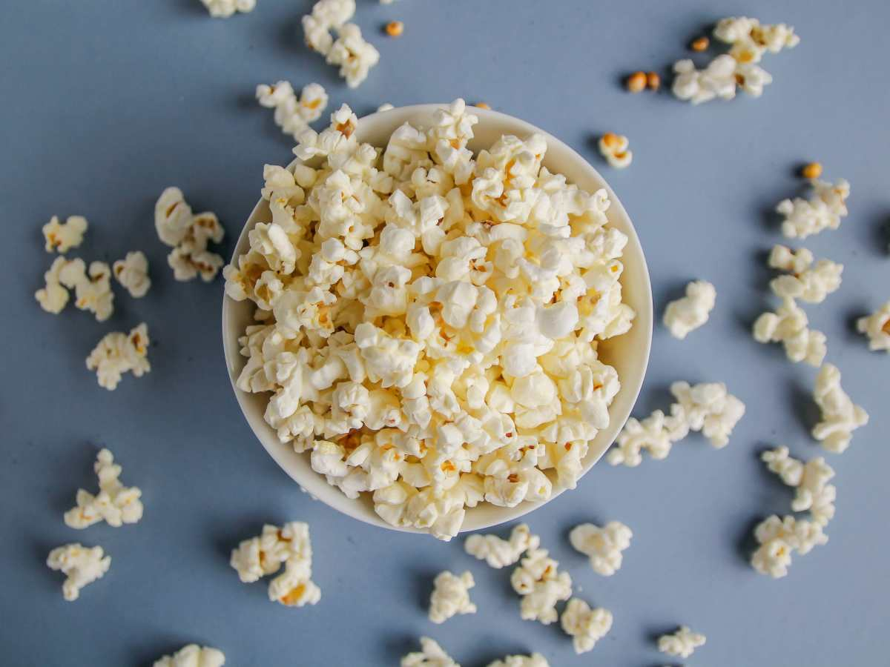

Back to index
Popcorn

Description
Popcorn is a whole grain food and is high in important nutrients like
fiber and antioxidants. It is a healthy snack when prepared with minimal
oil and not too much salt or sugar.
Ingredients
- 3 tablespoons coconut oil or extra virgin olive oil
- 1/3 cup high quality popcorn kernels
- 1 tablespoon butter or more to taste, optional
- Salt to taste
Steps
- Heat the oil.
- Add the popcorn.
- Cover the pot, remove the head and count 30 seconds.
- Return the pot to the heat.
-
Once the popping slows to several seconds between pops, remove the pot
from the heat.
- Remove the lid and dump the popcorn into a bowl.
- Melt the butter in the warm pot and drizzle over the popcorn.
- Sprinkle with salt.